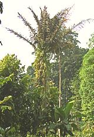

SAFARI
Users
- Varieties
- Toddy Palm Products - (The edible ones)
- Links
Toddy Palm #1 -
[Palmyra Palm, Wine palm, genus Borassus]

This is the "default" toddy palm, presumed if there are no other hints given. Several species of this tall fan palm are native to Africa, Madagascar, New Guinea and Southeast Asia. All produce rather large fruits which are eaten roasted or raw. Jellylike immature seeds are also popular and available in cans worldwide. The inflorescences are tapped for sap called toddy which can be kept fresh or fermented for beverages, particularly arrack. It can also be boiled down into palm sugar which is much used in Southeast Asia, including Indonesia as Gula Jawa (Javanese sugar).
Particularly in Tamil Nadu, India, young plants are germinated for their
underground stems which are boiled and eaten. The germinated shells are
opened and the crunchy kernel is also eaten - similar to a water chestnut
but sweeter. Even the fibrous outer layer of the fruit is boiled or
fire roasted and eaten.
Photo by J.M.Garg licensed under Creative Commons
Attribution
Share-Alike 3.0 Unported.
Toddy Palm #2 - [Fishtail Palm, Sago
Palm, Caryota Urens (and similar)]
Native to Sri Lanka, India and Burma, this fishtail palm is relatively short, growing to no more than 40 feet, and short lived. It has a smooth gray bark with widely spaced leaf scar rings from which the inflorescences emerge. This tree is considered an invasive in Florida.
The fruit is about 1/2 inch in diameter, red when ripe and contains a
fair amount of oxalic acid so it isn't really edible. Once fruiting is
complete the tree dies. Meanwhile, the sap is tapped to make a palm sugar
called palm jaggery (unrefined cane sugar may also be called jaggery).
Photo by Atamari licensed under Creative Commons
Attribution
Share-Alike 2.5.
Toddy Palm #3 -
[Sugar Palm, Arenga Palm, Black-fiber Palm, Gomuti Palm, Aren, Irok,
Kaong, Arenga Pinnata alt Arenga saccharifera]

This feather palm native to eastern India, Malaysia, Indonesia, and the
Philippines is tapped to make beverages and to boil down into a palm sugar
known as gur in India. In the Philippines it is much used to make palm
vinegar. The fruit can be eaten only if properly prepared, the juice and
pulp being caustic in their natural form.
Photo by W.A. Djatmiko licensed under Creative Commons
Attribution
Share-Alike 3.0 Unported.
Toddy Palm #4 - [Silver Date Palm,
Sugar Date Palm Phoenix sylvestris]
This feather palm native to southern Pakistan and most of India is tapped to
make alcoholic and non-alcoholic beverages. In West Bengal, India, the
sap is boiled down to make palm jaggery.
Photo by J.M.Garg licensed under Creative Commons
Attribution
Share-Alike 3.0 Unported.
Toddy Palm #5 - [Coconut Palm,
Cocos nucifera]
The coconut palm is also tapped for its sap to make palm sugar and
alcoholic beverages, though its many other uses predominate. The sap is
much used to make vinegar in the Philippines.
Photo © i2005
.
Toddy Palm #6 - [Nipa Palm,
Nypa fruticans]
This is the only palm adapted to the mangrove environment. it is
tapped for its sap in the Philippines and Malaysia to make alcoholic
beverages, and in the Philippines to further ferment into vinegar.
Details and Cooking.
Photo by Eric Guinther distributed under license Creative Commons
Attribution
Share-Alike 3.0 Unported.